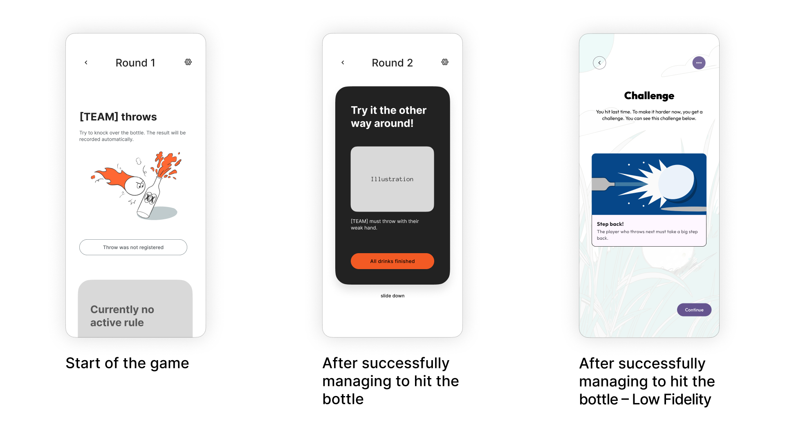

Flunk-E

"How do you make a party game fair without killing the fun?"
Flunkyball thrives on its simplicity — but it has one big flaw: good throwers dominate. Bad throwers lose.
Our answer: an intelligent game system combining sensors, Bluetooth, and challenges to create balance without losing the social essence of the game.
The result: a smart ball, a robust sensor bottle, and an app that acts as a digital game master — keeping the game exciting for everyone.
A team project of three, together with Joost Haschen and Nicklas Spiering.
The Vision
How can sensors make a social game better — without replacing it?
Context: A popular game with one flaw
Flunkyball couldn't be simpler: throw the ball, hit the bottle, drink. That simplicity is exactly what makes it a festival classic. But after a few rounds, the same pattern emerges: the best throwers dominate, the weaker ones just watch. The game becomes one-sided — and less fun for everyone.
We asked ourselves: does it have to be this way?
The idea: adding dynamics through challenges
Instead of changing the core concept, we wanted to add a layer: challenges.
The thinking:
Strong throwers get harder tasks (e.g. "throw with your left hand" or "eyes closed")
The game stays physical and social, but becomes fairer and less predictable
Our goal: technology shouldn't take over the game — it should work in the background to make sure everyone has more fun.
The goal: a system that thinks for itself
Our approach was clear: an intelligent game system that:
- Automatically detects whether the bottle was hit
- Assigns fun challenges
- Connects physical and digital play — without the app getting in the way

From first idea to timeline: our Miro board shows the full process — including discarded ideas like GPS tracking or voice recognition that would have been too complex or unreliable.
UX/UI Design & Role
UX Planning & Prototyping
While we worked as a team of three, my main focus was on the app's user experience and wireframing. I mapped out our initial ideas in Miro and built the low-fidelity prototypes in Figma using Material Design 3.
Iterative Redesigns
Based on weekly feedback sessions with our lecturers, I handled multiple complete UI redesigns to make sure the app was easy to use outdoors and under distracted party conditions.
Connecting Hardware to UI
I planned how the interface should react to the physical sensors. Instead of using heavy instruction text, I structured the game flow so that physical sensor triggers instantly launched the tutorial animations my teammate created, helping us cut down on-screen text by about 70%.
From Idea to System
Concept & Design: How hardware, software, and game mechanics come together
Reimagining the game mechanics
The fundamental challenge was: how do we create balance without overcomplicating the game?
Our solution rests on three pillars:
1. Automatic hit detection
Helps the app keep track of who threw and whether they earn a challenge.
2. Challenge assignment
The team that scores gets a challenge — giving the opposing team an advantage.
3. Social interaction stays analogue
The technology runs in the background. No staring at your phone — just brief interactions with the app when a new challenge comes up.
The core idea: the system is intelligent, but invisible. It feels like regular Flunkyball — just fairer and more fun.
System architecture: three components, one experience
Ball + Bottle + App = seamless connection

The technical core is surprisingly straightforward:
The smart ball
- Accelerometer detects throw motion and impact
- BLE module sends signal to the app
The sensor bottle
- Accelerometer registers when it tips over
- Extra durable bottle built to withstand countless throws
The app as game master
- Receives sensor data via BLE
- Manages score and challenge assignment
- Displays the current challenge

One of the key challenges: all three components had to communicate reliably in real time — even when the ball flies a little further.
The digital interface: the invisible game master
Design principles for the app
Designing the app wasn't primarily about looks — it was about clarity under party conditions:
1. Information at a glance
- As accessible as possible, but energetic in feel
- Current challenge easy to find instantly
- Score visible at a glance
2. Minimal interaction
- No complex menus during gameplay
- Few taps for the most important actions
- Automatic transitions between game phases
3. Visual feedback
- Animations confirm a hit
- Challenges shown in team-specific colors

Designing for Hardware Reality
Since we were working with Arduino sensors outdoors, I knew Bluetooth latency or connection drops would happen. I added a manual "Throw was not registered" fallback button so the digital game flow would never lock up if the physical hardware missed a hit.
Glanceable UI for Party Contexts
During our weekly feedback sessions, we realized players shouldn't be staring at a phone screen during a social game. I redesigned this state as a high-contrast dark card that clearly displays the challenge at a single glance, using a simple "slide down" gesture to get users back into the analogue game quickly.
Iterating Away from Text
Our early low-fidelity wireframe relied heavily on Google’s standard Material Design 3 blocks and long instruction text. Realizing this killed the fun and flow of the game, I worked on stripping down the layout, which ultimately let us replace about 70% of the text with quick, contextual tutorial animations.
App Walkthrough
Challenge design: AI as a creative sparring partner
One of the most interesting conceptual questions: which challenges make the game fairer without being frustrating?
Our process:
1. Brainstorming with AI
We used AI to generate a broad range of challenge ideas — from simple ("throw with your left hand") to absurd ("throw backwards with eyes closed").
We tested different AI tools, including ChatGPT and DeepSeek, and found that each had its own strengths.
2. Reality check
Which challenges are actually feasible? Which ones are genuinely fun? Which ones are too frustrating?
AI output needed to be taken with a grain of salt and required human curation. By providing examples, we were able to steer the AI in the right direction.
Learnings & Takeaways
Hardware is different from what you'd expect
Before Flunk-E, I had only worked on digital projects. The combination of Arduino, Bluetooth, and app development showed me just how much more complex things get when physical components are involved. Things that work in the app suddenly fail due to Bluetooth range or sensor inaccuracies. That changed how I approach design: you need to engage with technical constraints early on. AI was a big help here too — it was great for giving us an overview of suitable hardware we previously knew nothing about.
Designing for specific contexts
An app that needs to work outdoors in noise and distraction requires different solutions. Large text, minimal interaction, clear feedback — those were my guiding principles for the UI design.
Teamwork under time pressure
We divided tasks efficiently and synced up regularly. What helped: clear responsibilities with deadlines and regular feedback from lecturers and fellow students.